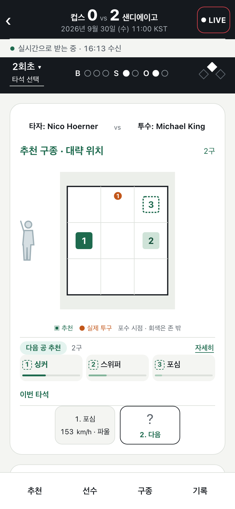

MLB 경기를 보며 옆에 띄워 두는 관전 보조 화면입니다. 투구 직전 상황만으로 다음 공의 구종과 목표 위치 후보를 보여 주고, 실제 투구와 비교합니다. 방향 설정, 실험 설계, ML 모델을 맡았습니다. 학습(2023-05~2025-04)과 검증(2025-07~09)은 시간 순서로 나누고, 2026 자료는 학습과 모델 선택에 쓰지 않았습니다.A second screen for watching MLB games. Using only pre-pitch context, it suggests the next pitch type and target zone, then compares them with the actual pitch. I led direction, experiment design and the ML models. Training (2023-05 to 2025-04) and validation (2025-07 to 09) are split by time, and 2026 data is never used for training or model selection.
- 측정됨Measured다음 공 결과(10클래스) 예측 log loss 1.4904, 상황 빈도 기준선 1.5041보다 낮음. 검증 구간 311,721구, 시드 5개 모두 개선.Next-pitch outcome (10 classes) log loss 1.4904 vs 1.5041 for the frequency baseline, on 311,721 validation pitches; better on all 5 seeds.
- 근거 없음No evidence추천 정책을 2026 시즌 2,429경기로 오프폴리시 평가한 결과 개선이 확인되지 않아, 화면에 "검증 전 실험"으로 표시합니다.Off-policy evaluation of the recommendation policy on 2,429 games of the 2026 season found no improvement, so the app labels it as experimental.
